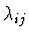
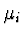
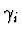

The Stillinger-Weber potential (F. H. Stillinger and T. A. Weber,
Phys. Rev. B 31 (1985) 5262) is given by

The two-body potential is read in as an IMD potential table as usual using the IMD variable potfile. The cutoff function fc (r) has also to be given as a file in the same format as the potential table. The corresponding IMD variable is ttbp_potfile.
The parameter Z corresponds to the IMD variable ttbp_constant and the hybridization pertains to the variable ttbp_sp.
As a result of the short range nature of the potential, only the nearest neighbours have to be considered in the computation of the potential and the forces. The maximal number of nearest neighbours must be specified as a parameter with the IMD variable neigh_len. It is used to allocate memory for the neighbour tables.
In the present implementation, the following form of the Tersoff potential is used (J. Tersoff, Phys. Rev. B 39 (1989) 5566):

The IMD variables with the corresponding parameters are as follows:
| ters_a | Ai | |
| ters_b | Bi | |
| ters_la |  | |
| ters_mu |  | |
| ters_ga |  | |
| ters_n | ni | |
| ters_c | ci | |
| ters_d | di | |
| ters_h | hi | |
| ters_r_cut | Si | |
| ters_r0 | Ri | |
| ters_chi | ||
| ters_om |
The values of the single-index parameters have to be given for all atom types in a row. In the case of the variables ters_chi and ters_om, the non-diagonal values of the matrix are read in using the following format:
As in the case of the Stillinger-Weber potential, the value of the variable neigh_len must also be specified.